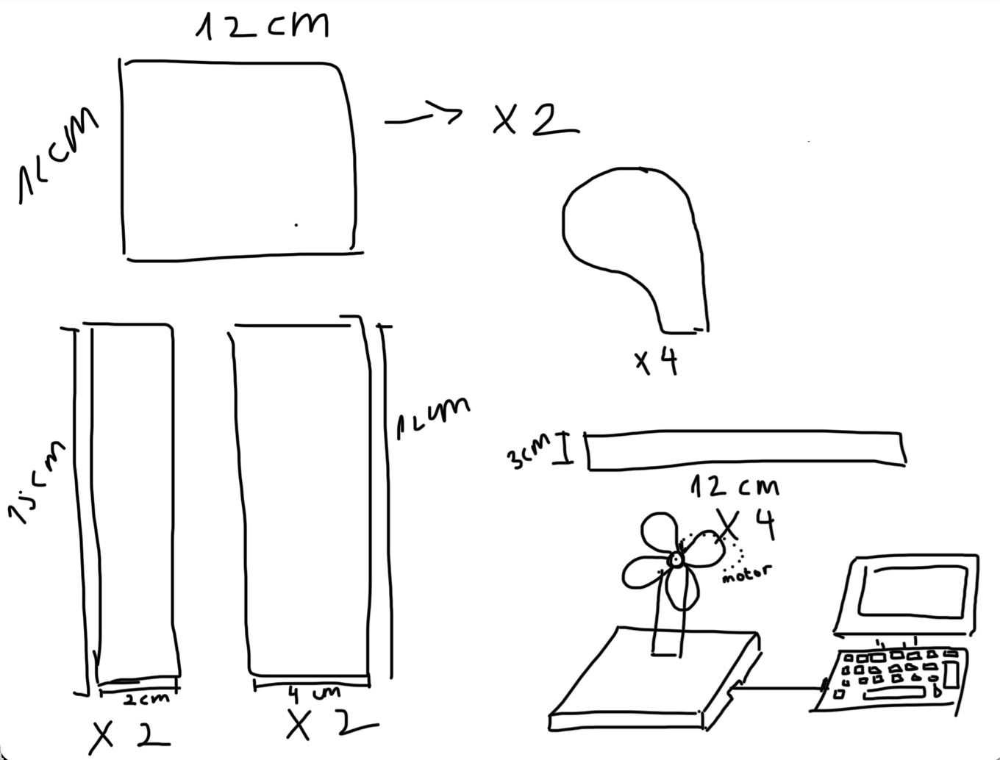

For this week's assignment we had to create a kinetic structure that was able to be moved through a circuitry. Then, used a multimeter to measure the voltages in the circuit. Use Ohm's Law to calculate current through the circuit. Document your work and learning. Include at least one video/ gif of the sculpture.
- Calipers - Screwdriver - Screw - Wood - Motor - Breadboard circuit - Fusion 360 - Arduino - Potentiometer - Hot glue
Since we had to create a kinetic structure, and is summer meaning warm weather, I decided to use the opportunity to create something useful that I could use and benefit from it. So, decided to go ahead and do a fan.
I started by drawing a schematic representation with all measures of the parts I wanted to include in my design.
I started by doing the body in the form of a cylinder, and then continue on to create the holder and eventually the screw. My screw driver was 5.5mmm. Below, I have attached a picture of how it is simmulated.
This is the final result of the pieces assembled. I would definetely say it took me around -5min to print my pieces. The wheels definetely proceeded to come the way that I expected and perfectly fit into each other on the second try!